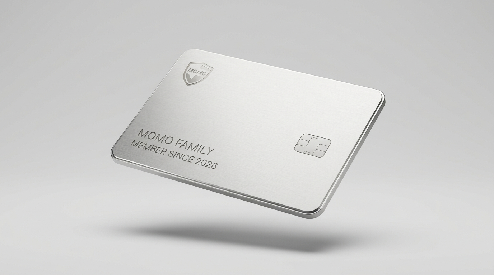
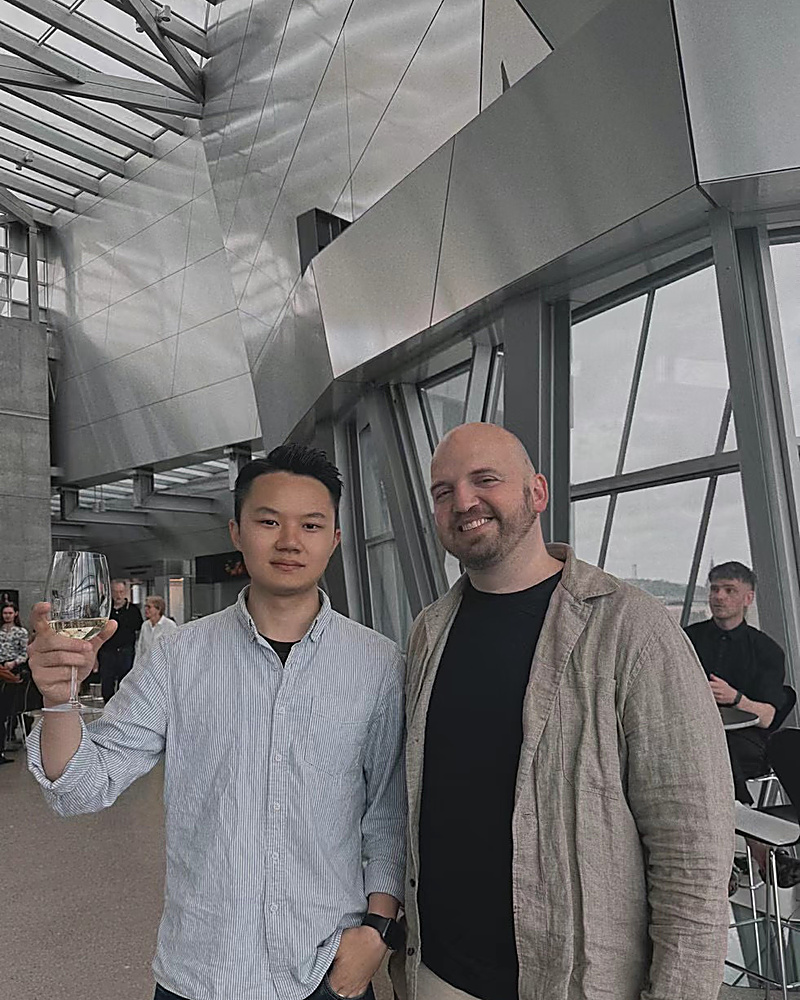
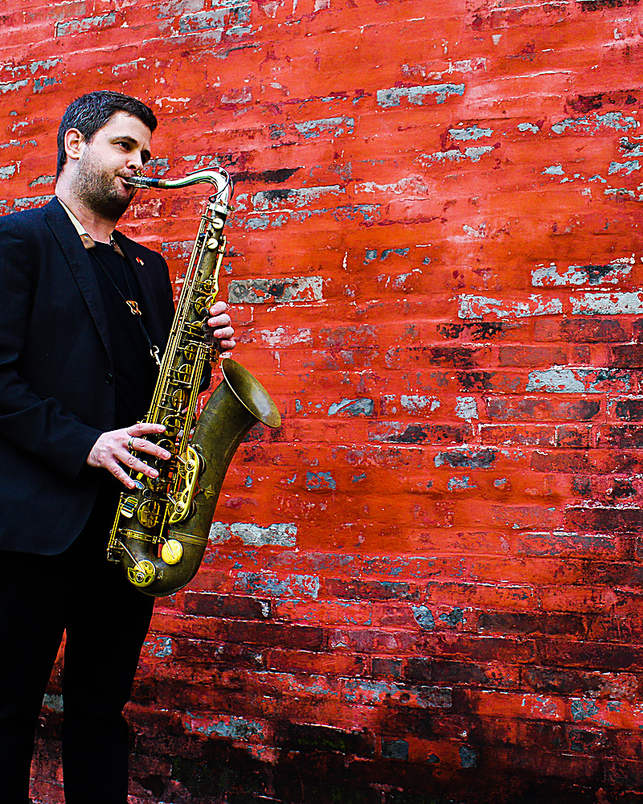
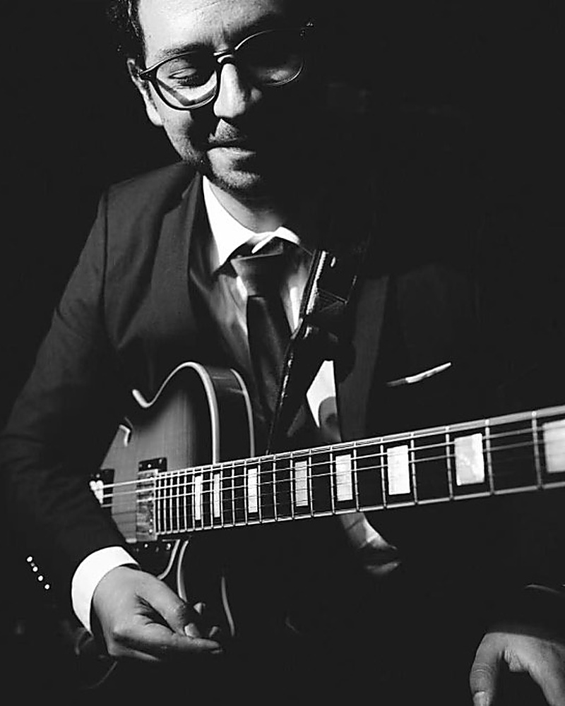
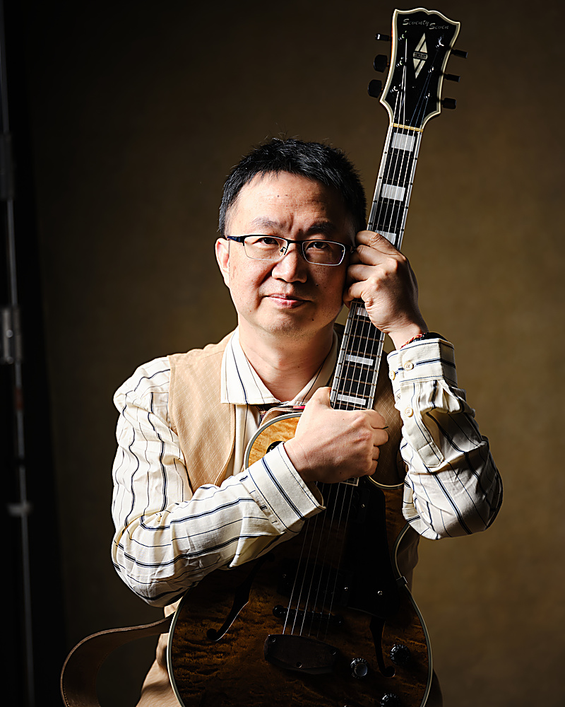
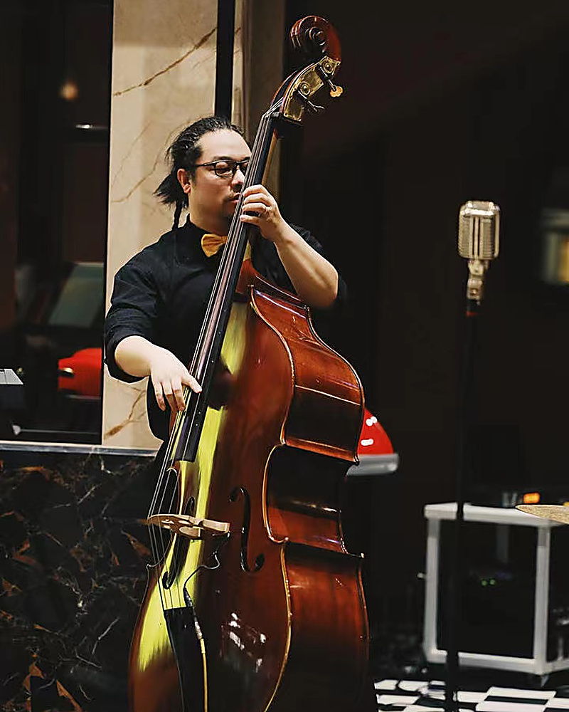
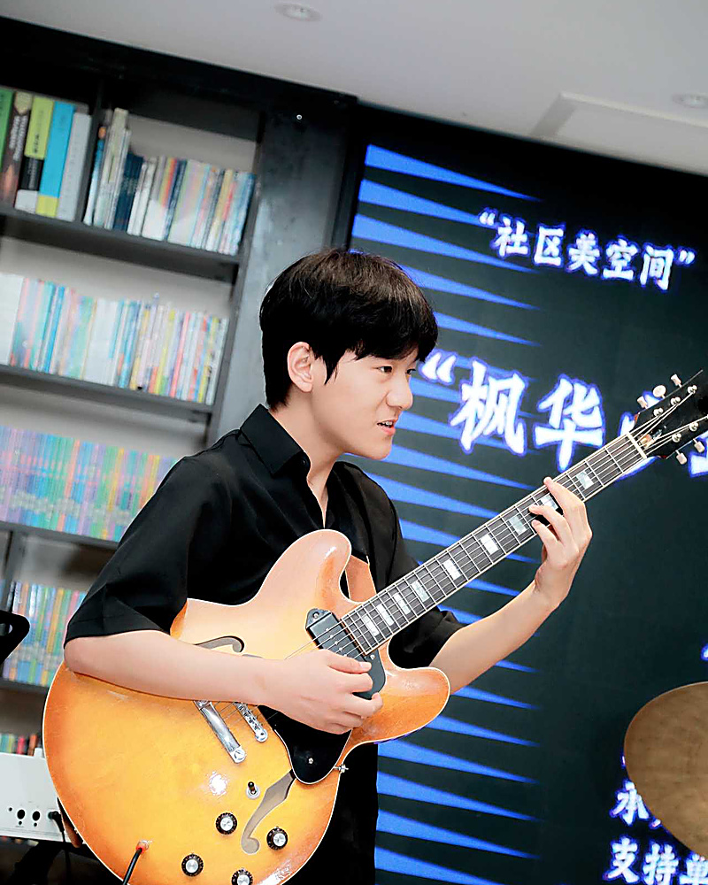

// DETAIL 01 · HERO STAGE REFINEMENT
4K 巨幕首屏微雕 · 呼吸状态胶囊与自然过渡
A432Hz ON AIR
|
桐梓林 × 麓湖双空间
// DETAIL 02 · SYNCOPATED BENTO & JAM ENGINE
切分音 Bento · 钛金漫反射与即兴 Jam 慢摇琴盒

★ 2026 PLUS ECOSYSTEM
#MM-2026-VIP
MOMO 家庭音乐会员
一份年费，激活全家音乐生态。
涵盖 12 次 1对1 专属定制指导、3 次家庭成长诊断、4师1生真实乐队伴奏实录数字单曲，杜绝琴房流水线推销。
ANNUAL FEE
欢迎来访或咨询
/ 年 (每天约 欢迎来访或咨询)
// 4-PAD ACOUSTIC DECK
♪
WEB AUDIO SYNTH ENGINE
轻点按键或开启慢摇
TOUCH & HEAR LIVE
REAL INSTRUMENTS →
// DETAIL 03 · DUAL-TRACK KINETIC STAGE
双排反向交错流体声浪 · 11位中外名师智库

01 · FOUNDER
MOMO FOUNDER / BASS & KEYS
Timo 主理人
音乐通识架构师 · 贝斯与键盘演奏家

02 · DOCTORATE
DMA / OVERSEAS CHAIR
高信 博士
作品与方向 · 爵士钢琴

03 · SAXOPHONE
INDIANA / JAZZ ARTIST
周思文 (Joe Longardner)
印第安纳大学萨克斯硕士 · 现代大乐队总指挥

04 · FLAMENCO
SPAIN / GUITAR MASTER
Carlos Heredia
西班牙弗拉门戈吉他演奏家 · 国际巡演名师
05 · PIANO
JAZZ & CLASSICAL PIANO
张茜
川音钢琴专业全国第一名 · 日本田中裕士进修
06 · VOCAL
CONTEMPORARY VOCAL
苟涵凝
现代流行声乐导师 · 爵士与现代音乐唱法研习
Timo 主理人

07 · DRUMS
JAZZ & LATIN DRUMS
毛维
现代打击乐导师 · 律动内核与大乐队鼓手

08 · STRINGS
CONTEMPORARY VIOLIN
乔晓记
现代小提琴演奏家 · 先锋即兴弦乐

09 · GUITAR
ELECTRIC GUITAR & FX
王崇恩
电吉他先锋音色塑造 · 单块效果器架构师

10 · PRODUCER
LACM / P&R STUDIO
祁子垚
洛杉矶音乐学院录音制作 · 首席音频工程师

11 · COMPOSER
SOUTHAMPTON MMus [DISTINCTION]
段重生 (David Duan)
英国南安普顿大学作曲硕士最高荣誉 · 盲人作曲家
毛维
// DETAIL 04 · FULL 6-BENTO PROMO TILES
6大独立专页 Bento 瓷砖 · 专属创意微交互
为全站 6 大核心独立专页入口定制差异化微交互（黑胶出套、双空间声场切换、风格扇形展开、心跳脉冲与文化衫 3D 浮动）。